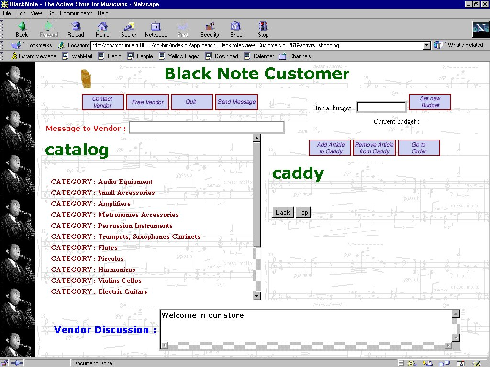
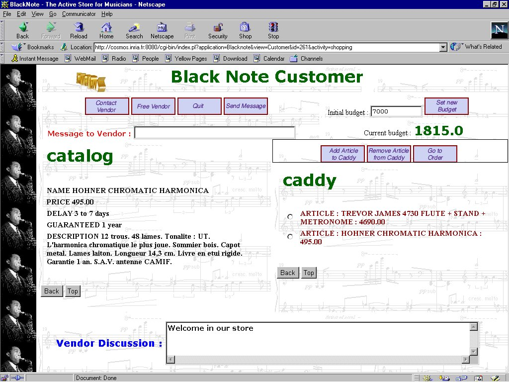
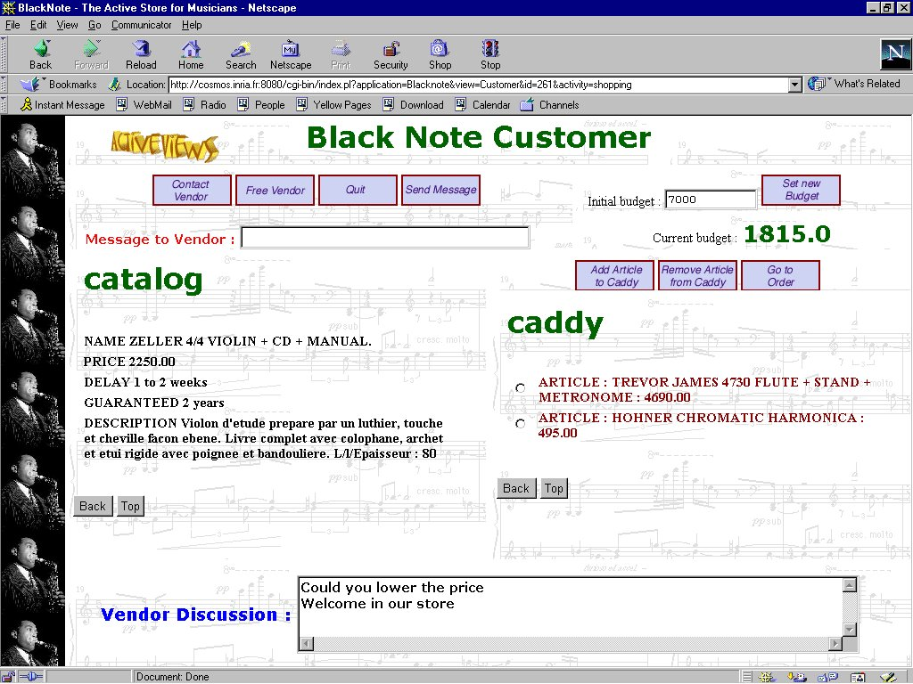
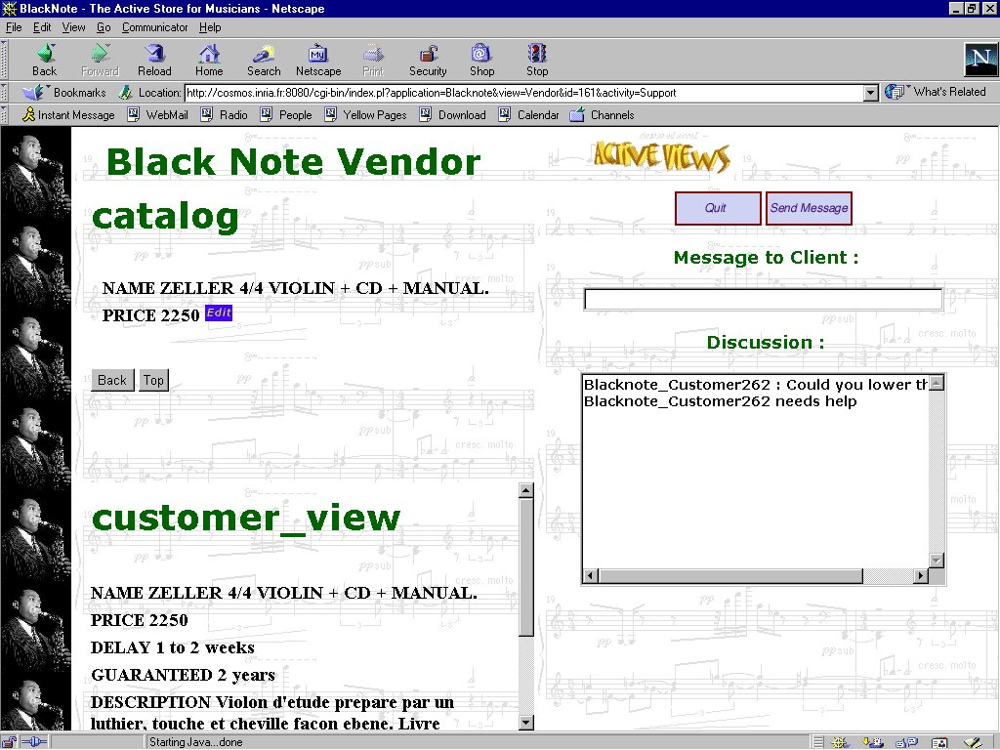
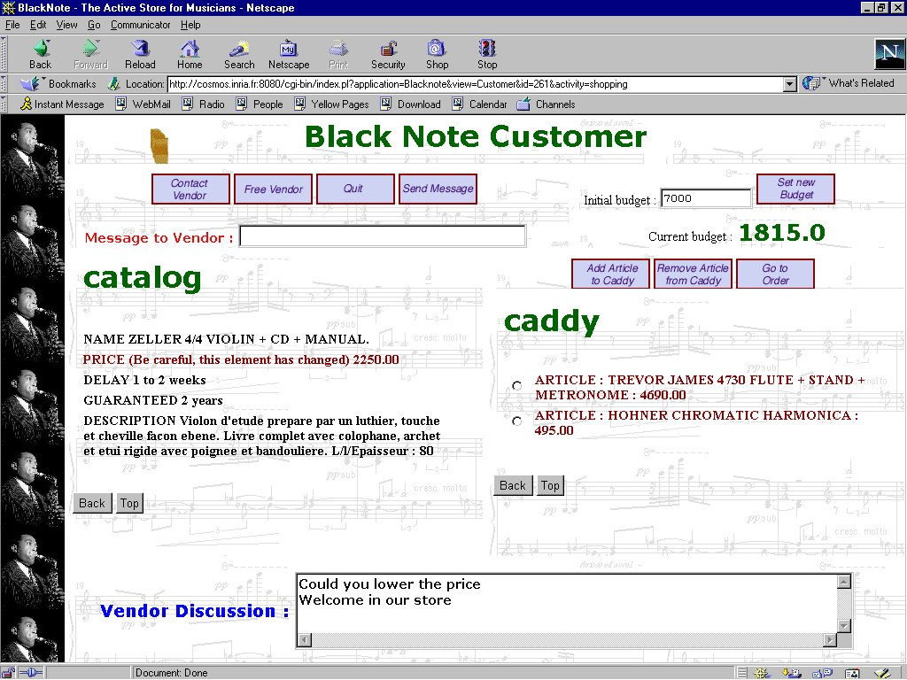

ActiveViews Screenshot Presentation
INRIA-Rocquencourt, France
University of Tel Aviv, Israel
Ardent Software, USA
This document contains
screenshots of the demonstration of the ActiveViews System as it
has been presented at the 25th International Conference on Very Large
Data Bases, September 7-10, 1999, Edinburgh, Scotland, UK. A
complete presentation of the ActiveViews System can be found in the
conference proceedings of the same conference. (Best quality of
the presented screenshots can be obtained by increasing the size of
the browser window)
Active Views: Short Overview
Electronic commerce is emerging as a major Web supported application. This
demonstration shows that database technology can, and should, provide the
backbone for a wide range of such applications. More precisely, we demonstrate
the ActiveViews system, which, relying on an extensive use of database
features including views, active rules (triggers), and enhanced mechanisms
for notification, access control and logging/tracing of users activities,
provides the needed basis for electronic commerce.
Based on the emerging XML standards (DOM, XML query languages, stylesheet
labguages, etc.), the system offers a novel declarative view specification
language, describing the relevant data and activities of all actors (e.g.
vendors and clients) participating in electronic commerce activities. Then,
acting as an application generator, the system generates an actual, possibly
customized, Web application that allows users to perform the given set
of controlled activities and to work interactively on the specified data
in a standard distributed environment.
The ActiveViews is based on the following technical platform :
-
XML data is stored in the Axielle XML
repository (Ardent Software) based on ODMG (O2 object-oriented DBMS) for
the storage of XML data and a Java/DOM programming interface for developing
XML applications.
-
XML data is queried via a the XOQL query
language which has been developed at INRIA as part of this project.
-
Active views are implemented as standard Axielle (O2) clients.
-
Active rules are handled by a rule manager
also developed as part of this project.
-
Update notifications between clients and the XML repository server
are managed by a Java version of the standard C++ notification mechanism
of O2 (Ardent Software) .
-
Application notification are implemented by using JSDT (SUN)
-
ActiveViews applications are defined by a declarative
specification language, called AVL (a
detailed description of AVL can be found in the proceedings of VLDB'99).
-
The ActiveViews system has also been built on top of other standard
Web technology such as Java/JavaScript, RMI and HTML.
Example: Electronic Store for Musical Equipment
The example presented during this demonstration is an electronic commerce
application for musical equipment. XML data has been provided a French
online department store and represents a catalogue for musical equipment.
The application defines two views for customers
and vendors. The following screen shots illustrate
a session of some customer browsing the catalogue and communicating with
some vendor. More precisely, customers can :
-
browse the catalogue
-
contact vendors for some specific category of musical equipment
-
add articles to a caddy within a given budget
-
define a maximal budget
-
verify the remaining budget
-
create and issue an order
On the other hand, vendors can:
-
modify the catalogue (price of articles)
-
discuss with clients
The complete application is described in a declarative AVL
specification file.
Demonstration
Screenshot 1
The first screenshot shows the screen of a customer who has entered the
electronic store and started activity shopping.
The displayed HTML page contains all variables and methods defined in activity
shopping.
The frame with title catalog corresponds
to a variable catalog which has been
declared in the ActiveViews declaration file. The value of this variable
is an XML document obtained by the XOQL
query also specified in the same declaration. Observe the definition
of the different modes for the elements
in the query result : the catalogue is read in deferred mode,
i.e. document nodes are loaded into the view at demand during the browsing
activity of the customer. The only exceptions are nodes corresponding
to elements of element type ARTICLE and NAME that are loaded
immediately with their parent nodes. Displayed buttons correspond to view
methods also declared in the view specification. For example, button Add
Article to Caddy corresponds to method add_to_caddy.
Before clicking on this button, the customer must browse the catalog and
select an article, which becomes the argument of the corresponding method
call.

Screenshot 2
The second screenshot shows the customer's screen after having defined
an initial budget, browsed the catalogue, and added some articles to his
shopping cart (caddy). Observe that the remaining budget is calculated
automatically as the difference between the initial budget and the sum
of the price of the articles in the shopping cart.

Screenshot 3
Suppose the customer has clicked on button contact_vendor.
This action has created a notification which fires a rule
defined
in the vendor's view specification. Before executing the rule body,
the rule manager verifies if the vendor is responsible for the corresponding
category of musical equipment (category=c) and is not already in
contact with some other customer (customer=null). The rule body will initialize
the customer variable in the vendor view and execute a method
accept_contact
for informing the customer view that the contact request has been accepted.
We will not go into detail about the complete protocol for establishing
a contact between the vendor and the client. The following screenshoot
shows the screen of a customer who has contacted a vendor and asked to
lower the price of the displayed article.

Screenshot 4
The following screenshot shows the vendor's screen after having
received the question of the customer (Discussion:
"Could you lower the price"). Observe that the vendor is automatically
informed about all browsing activities of the customer (frame customer_view).
The information in this frame is refreshed by an active rule which is fired
by the customer's browsing steps and creates notifications for the vendor's view.
Since the vendor is allowed to change the price of an article (mode write),
he will update the price.

Screenshot 5
The final screenshot shows the customer's screen after the modification
of the price by the vendor. Observe the warning besides the PRICE attribute
. In fact, the price has not been changed yet and the customer simply clicks
on the corresponding field in order to obtain the new price.
